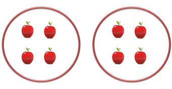
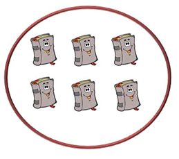
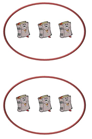

Se conoce como número par a cualquier número que es posible dividirlo entre dos. Por ejemplo: 0, 2, 4, 6, 8, 10.
Los números pares negativos
Tantos los número positivos como los números negativos pueden ser pares o impares. Veamos número pares negativos:
-2, -4, -6, -8
Para enseñar números pares, es importante que recordemos que con éste podemos acudir a la división en grupos. Por ejemplo, si tenemos 8 manzanas y las tenemos que dividir en 2 grupos (siempre tenemos que tener en cuenta que la división será de 2), entonces dividimos:
8/2
Veamos esto, en el ejemplo de las manzanas:

Esta sería la forma de separar 8 manzanas en 2 grupos, Entonces, un número par se podrá dividir en dos resultando 2 conjuntos de cosas de igual cantidad.
Veamos otro ejemplo, supongamos que tenemos libros; veamos cómo son los números pares si tuviéramos 6 libros:

Y tenemos que dividir estos 6 libros en 2 grupos. Entonces dividimos
6/2
Quedando nuestra división de libros de este modo:

Como vemos en ambos grupos se encuentra la misma cantidad de libros. Entonces podemos concluir que 6 es un número par.
Números impares
Si un número no es par, entonces es impar. Por ejemplo, son números impares los números 1, 3, 5, 7, 9 y los números que finalizan en estos números.
Números negativos impares
También los números negativos pueden ser impares: estos son: -1, -3, -5, -7, -9
¿Para qué se usan los números pares e impares?>
Una vez que logres reconocer los números pares y los impares, te resultará mucho más sencillo saber si ese número es posible dividirlo en 2 partes completamente iguales, dado que esa es la característica de los números pares. En cambio si reconoces rápidamente a un número impar, sabrás que al dividirlo en dos, el resultado siempre será desigual.